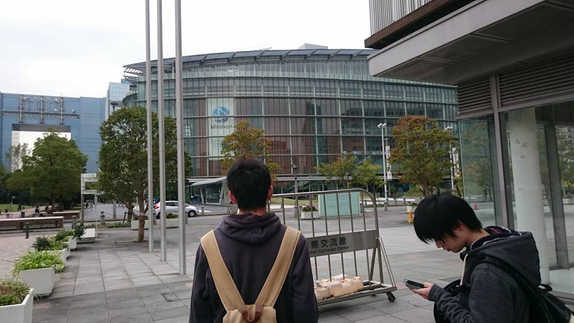

IVRC決勝大会振り返り
2016年11月9日 (開発者日記)
こんにちは、ハード担当の我妻と代表の望月です。
今回は決勝大会を振り返ってみたいと思います。
———– 前日（10/28）———–
開場時間が10：00～なのでなるべく早く会場入りしたいところですが、本厚木にある大学から東京テレポートには二時間かかります。
メンバー全員が寝坊しない、現実的な時間（しても起こしに行けるくらいの時間？）として11時過ぎに会場入りしました。

自分は初めて日本科学未来館にいったのですが、ガラス張りできれいな建物でした。
今回は、通常の入り口でなはなく出展者入り口で入ります。
先に会場に送っていた荷物を受け取り、骨組みを完成させて、いったんお昼にしました。近くにコンビニがあり助かります！

ということで、お昼過ぎからブースの設営を再開します。こんな感じでブースの設営が終わりました。大体16時頃だったと思います。

が、チームのメンバーにやってもらうと不親切さが目立つと言われました…
プログラム的なバグは前日までに直していたのですが体験の修正はしていなかったのでここにきて…という気持ちはありましたが
会場内でできる限りわかりやすくしようと修正しました。
しかし、撤収時間は20：30までなので限られた時間ではありましたが、なんとかある程度まで修正を間に合わせることができました。
この日は20時過ぎに解散して次の日に備えることにしました。
———– 審査当日（10/29）———–
この日は10：00～12:00展示審査なので、すこし早めに集まります。
8：30に会場入りをし最後の動作テストと、体験のフローを確認しました。
審査ではVRコンテンツでの視線誘導を促す方法や、顔画像についての学術的な意見を頂き、この展示を通して「Real baby / Real family」の発展に繋がる非常に大切な時間となりました。
審査時間が終わってからは、IVRCブースも一般開放され、たくさんの方にコンテンツを体験して頂くことが出来ました。
私たちのコンテンツは、友達同士や家族で来られた方に非常に好感触でした！
私たちのブースを去った後にも体験者にプレゼントした母子手帳に載せてある赤ちゃん画像を見比べて楽しんでいる様子が見ることができました。
夏からこのコンテンツを制作してきて良かったと思える最高の瞬間だったと思います。
また、体験者の中で二次元画像から推測した赤ちゃんを作りたいという方が来られ、私たちの企画の新たな切り口を発見することができました。
16:00からは表彰式がありました。

今年は多くの協賛企業賞がありましたが、残念ながら私たちは受賞することができませんでした。
しかし、ほかのチームの作品も私たち同様に予選会からブラッシュアップを重ねており、さすがだと思うばかりでした。
授賞式終盤、企業賞の次に、フランスのLavalで展示することができる大変栄誉ある賞、Laval virtual賞の発表がありました。
ここまで、VR学会賞や協賛企業賞を受賞できなく、何一つとして賞をとって帰れないんじゃないかという思いや、
自分たちの英語力やフランスの示唆、Laval virtualのテーマとの関係性から受賞できるかもしれないという思いの中、
Laval virtualの委員であるLaurentさんに呼ばれたのは私たちでした。嬉しさと驚きを感じながら壇上に上がりました。
IVRCのグランプリは逃してしまいましたが、それ以上のものを勝ち取ることができたと思います。

その後はIVRCの懇談会があり、私たちチームのスポンサーとして作品を支えてくれた富士通SSLの方や、IVRCの協賛企業の方、
夏からずっと私たちをずっと支えてきてくれた先輩方に挨拶し、また、他のチームの方とも交流を深めることが出来ました。
———– 一般開放日（10/30）———–
一般開放日は多くの方に私たちの企画を体験して頂くため、赤ちゃんをあやす体験のほかに2人の顔から赤ちゃんの顔を推測するのみのブースを作りました。
そこで私たちが使用していたカメラの画角の狭さが良い方向に働き、撮影する際には体験者さん2人にとても近づいていただきました。
ふと思ったのですが、それだけでコミュニケーションツールとして大いに機能するのではないかと思いました。

Laval virtual賞をいただいた記念として、Laurentさんと写真を撮らせていただきました。
Laurentさんに、「もっといろいろなことを経験して、もっともっとこの作品を向上してほしい！」と激励されました。
この言葉を胸に3月のLaval virtualにむけて、「Real baby/ Real family」をよくしていきます！


この日はIVRC2016として作品を展示するのは最後ということもあり、他の作品を体験しに行きました。
どの作品も予選よりも強化されており、開発欲のそそられる作品ばかりでした。
また、他のIVRCチームの方にも私たちの作品を体験して頂き、交流を深めることができました。
来年も日本科学未来館で展示ができるように、さらなるスキルアップを目指したいです。
IVRC実行委員会や協賛企業の方々、個人的ではありますがスポンサーの富士通SSLのご協力のお陰で盛会に終わることができました。
また「Real baby / Real family」も100人を超える多くの方々に体験して頂き、開発者としても嬉しい限りです。
「Real baby / Real family」はLavalに向けて進化できるように、これからも尽力致しますので、ご支援ご協力の程、宜しくお願いします。
最近のコメント